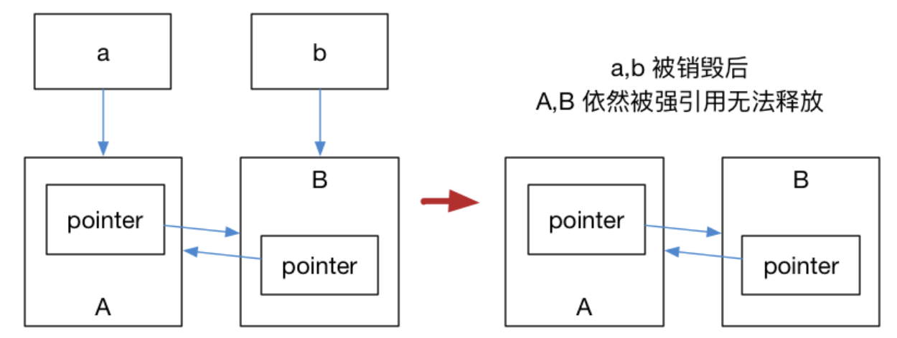
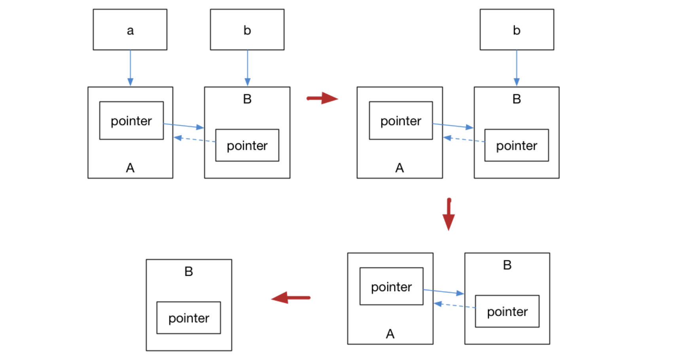

Lab1
注意：这里不是实验报告，仅记录一下实验过程中的新知识和踩的坑。
背景介绍¶
本次实验的目的是实现一个矩阵类，并且和 Eigen 库的计算做 compare。加分项是实现稀疏矩阵。
Github push 遇到的问题¶
在 SSH 连接远程仓库时，提示
kex_exchange_identification: Connection closed by remote host
Connection closed by 20.205.243.166 port 22
fatal: Could not read from remote repository.
Please make sure you have the correct access rights
and the repository exists.
解决方案：
- 检查 GitHub 上的 SSH 密钥和本地是否一致
- 换个网，比如这里我换成个人热点就好了
Eigen 库使用遇到的问题¶
Eigen 是什么？
Eigen 是一个用 C++ 编写的线性代数库，它提供了一系列的矩阵、向量、数组和运算符等工具，可用于执行各种线性代数计算，例如矩阵分解、矩阵求逆、线性回归、特征值分解等。Eigen 是一个开源的库，由高性能数值计算、声音处理和机器学习等领域的专业人士创建和维护。
macOS 怎么下载 Eigen？
输入以下命令来安装 Eigen：
brew install eigen
安装完成后，比如要使用矢量数据结构，代码中使用以下语句包含 Eigen 库的头文件：
#include <Eigen/Dense>
为什么 include 失败了？
没有设置编译器的 include 路径，这还是我第一次在小项目里用这种大第三方库，之前用的 json 库都是一个 hpp 文件我直接拷贝到项目路径的，就没有配 include 路径的经验，这部分以后再补，能狗则狗（不是
不配 include 路径，就索性把这个库的绝对路径找到。。。比如经过我的一番搜索，在 Homebrew 下载的软件包，比如 Eigen 的路径则是：
/opt/homebrew/Cellar/eigen/3.4.0_1/include/eigen3/Eigen/Dense
具体的 C++ 编程问题¶
接口要求用 T* data 一维数组存储二维矩阵，构造函数和析构函数应该这样写（RAII）：
// constructor with initializer list
Matrix(int r, int c) : rows(r), cols(c) { this->data = new T[c * r]; }
// destructor
~Matrix() { delete[] this->data; }
data 是一个动态分配的数组，使用了 new[] 来分配内存。因此，删除 data 时应该使用 delete[]。
如果在该实现中使用了 delete 而不是 delete[]，则只会释放数组的第一个元素对应的内存，而不是整个数组。这会导致内存泄漏问题和未定义的行为。
另外提一嘴，如果 this->data 类型为 std::vector<int>，则该类型的析构函数应该由编译器自动生成并自动调用，而不需要手动编写。std::vector<int> 内部实现了动态分配和释放内存的机制。如果在析构函数中手动释放 std::vector<int>，则可能导致重复释放内存和未定义行为的问题。
尝试申请一个长度为 0 的矩阵会不会出问题？
根据 C++ 标准，对于 new 表达式和数组形式的 new 表达式，如果请求的元素数量为 0，则程序行为是有定义的，且返回一个合法的指针（这个指针不是空指针）。
对于 new int[0] 这一特殊情况，它将分配一个长度为 0 的整数数组，并返回一个可用的指针，但不能对此指针进行解引用操作。
int* ptr = new int[0]; // 分配一个长度为0的整数数组
std::cout << sizeof(ptr) << std::endl; // 输出指针的大小
在这个例子中，ptr 是一个合法的指针，但直接对它进行解引用操作将导致未定义行为。通常情况下，new int[0] 的使用场景不多，因为它没有实际的用途。
上面这段是 ChatGPT 生成的，和我本地的情况也一致，但是查询 cppreference 发现应该是一个 ub:
[new 关键字的解释] The first dimension of zero is acceptable, and the allocation function is called.
[malloc 中的定义] 若 size 为零，则 malloc 的行为实现是其实现（生成）时定义的。例如可返回空指针。亦可返回非空指针；但不应当解引用这种指针，而且应将它传递给 free 以避免内存泄漏。
二次释放为什么会是一个问题？
因为一次释放后，这个地址不再归原来的程序所有，可能被其他新申请的内存空间占有，再次释放可能导致把其他变量申请的内存给释放了之类的问题，和数组越界差不多。
在重载运算符时，基本需要重复写一个二重循环，这里使用了一个范式把这个重复的二重循环提取出来：
template <typename F> void _do_on_every_item(Matrix<T> &rhs, F opers) {
this->_check_dim_issame(rhs);
for (int i = 0; i < this->rows; i++)
for (int j = 0; j < this->cols; j++)
opers((*this)(i, j), rhs(i, j));
}
这里 opers 应该放一个 lambda 表达式，为了避免写 lambda 表达式的冗长类型，这里的做法是把其类型用一个模版类型 F 来代替。
其实，如果这里一定是一个 lambda 表达式的话，可以不写模版，直接用 auto opers 让编译器自行推导。
不过，使用模板变量可以提供更好的类型安全以及代码的可读性和可维护性。auto 无法提供足够的类型安全保证，无法检查传递的实参类型是否与预期的函数签名匹配。如果函数的参数类型发生更改，代码可能会在编译时或运行时崩溃。
这样，比方说在后面的重载 operator+=(Matrix& rhs) 时，就只需要写
Matrix<T> &operator+=(Matrix<T> &rhs) {
this->_do_on_every_item(rhs, [=](T &item, T r_item) { item += r_item; });
return *this;
}
个人感觉代码还算易懂，rhs 提供了右操作数，lambda 表达式则清楚地表达了对每个元素做 += 运算。
有一些操作涉及从源矩阵构造一些新的矩阵对象，比如 col(int c) , submat(...) ，我原来是这么写的：
Matrix<T> col(int c) {
this->_check_c_exceeds(c);
auto col_copy = Matrix<T>(this->rows, 1);
for (int i = 0; i < this->rows; i++)
col_copy(i, 0) = (*this)(i, c);
return col_copy;
}
这里必须要在内部进行新对象的生成，如果这里用 new，则相当于把释放的工作交给了调用者，害怕.jpg
然而，这里首先在返回值的时候，会复制一次 col_copy，然后在调用时，比如 auto c2 = M.col(2) 处又会发生一次复制，在矩阵较大时性能低下，将返回值修改为 std::move(col_copy) 可能会解决这个问题，但是又需要为 Matrix 类提供移动构造函数…… 综合一次实验的成本来看，这里不采用这种实现，以后有机会再自己实现。
移动构造函数
移动构造函数是 C++ 11 引入的新特性，允许在不进行内存拷贝的情况下将对象的资源所有权从一个对象转移给另一个对象。移动构造函数通常比其拷贝构造函数效率更高，可以大幅减少内存使用和移动数据的时间。
移动构造函数的函数签名如下：
Matrix(Matrix&& other) noexcept; // 移动构造函数
其中 Matrix 是需要定义移动构造函数的类名称，other 是要移动的类实例。移动构造函数的语义是将 other 中的资源（如内存、文件句柄等等）转移到当前类实例中，并在 other 中保留一个空状态，即保留指向内存的指针，但不进行内存拷贝。
以下是示例代码：
class Matrix {
public:
Matrix(Matrix&& other) noexcept : rows(other.rows), cols(other.cols), data(other.data) {
other.rows = 0; // 设置 `other` 中的状态为空，保留指向内存的指针
other.cols = 0;
other.data = nullptr;
}
private:
int rows, cols;
double* data;
};
int main() {
Matrix mat1(10, 10);
Matrix mat2 = std::move(mat1); // 调用移动构造函数将 mat1 中的资源移动到 mat2 中。
}
在此示例中，mat1 资源被移动到了 mat2 中，mat1 中的状态被设为空，即保留指向内存的指针，以免在 mat1 被析构时出现 Segmentation Fault。
需要注意的是，移动构造函数通常使用右值引用参数，通过 && 进行声明。在函数体中，可以使用 std::move 结合移动语义实现资源的移动操作。
突发：群聊消息导致我重新审视了一下这段代码，我没有给类实现拷贝构造函数，此时的默认拷贝构造函数是浅拷贝。col_copy 肯定是会调用一次析构函数来把 data 的值释放掉，这样肯定会报错的。然而在这种情况下使用
g++ -fsanitize=address -g matrix_main.cpp -std=c++20 -o matrix_main
后还是不会报错，猜测可能是 RVO 优化掉了，使用 -fno-elide-constructors 禁用 RVO，结果报错。
解决方法：老老实实实现拷贝构造函数，以糊弄助教：
Matrix(Matrix& m) {
this->rows = m.nrow();
this->cols = m.ncol();
this->data = new T[length];
for (int j = 0; j < length; j++) {
this->data[j] = m[j];
}
}
突发：写了这个之后导致所有的返回值都出错了（找不到 Matrix 的构造函数）。原因在于拷贝构造函数签名是 Matrix(const Matrix& m)，在一些编译器的实现中和不加 const 的版本不能互相兼容（比如 clion 会报错，但是 g++ 不会），解决方案是把签名改过来，然后给各个函数恰当地标上 const 标记。
RVO 优化
能否使用类似 M.f() 这样的语法来进行重载的运算符的调用？
显然，如果重载了 operator+ ，则可以使用类似 C = A.operator+(B) 这样的语法来显式调用，但是这看上去很蠢。而且，如果考虑到 operator+= ，则可能会发现此函数返回类型应该是 void，因为一般我们会忽略返回值。
在某些情况下给这种函数提供一个 Matrix& 的返回值可以让这个函数支持链式调用，比如 A += B += C。
还遇到了一个 const 标记的问题，比如 operator+=(Matrix& rhs) 这个 rhs 应当标记为一个 const Matrix& 。
const 的一些用法
也遇到过一些人说千万不要使用 const，但是有些面试还是会考到，所以稍微学习一下，有个印象。
- const 修饰对象，表明对象不能被修改：直接尝试这么做是编译时错误，而间接尝试这么做（例如通过到非常量类型的引用或指针修改常量对象）的行为未定义。
- 非静态成员函数可以带 const，带有不同 const 的函数具有不同类型，从而可以相互重载。在有 const 限定符的函数体内，
*this有同样的限定，例如在有 const 限定符的成员函数中只能正常地调用其他有 const 限定符的成员函数。（如果应用了 const_cast，或通过不涉及 this 的访问路径，那么仍然可以调用没有 const 限定符的成员函数。）
但是 _do_on_every_item 不一定是只读的，如果在这标 const，则使用 rhs 的函数（doei）也必须相应更改，可能会导致预期之外的行为，比较僵硬，暂时没想到好的思路。
稀疏矩阵处理思路¶
稀疏矩阵的数据结构为
template <typename R>
std::map<int, std::vector<std::pair<int, R>>>
这样比较方便访问某一行，但是不太方便访问某一列。一些诸如十字链表的结构复杂，并且也不方便支持转置运算。这样看来稀疏矩阵的数据结构设计还需要考虑其支持的一些运算。
在进行运算时，需要考虑值是否变为 0 了，这样的情况需要从稀疏矩阵中删除这个记录。这里有很多值得注意的细节，比如需要从 vector 中 erase 则必须使用迭代器进行遍历；在 erase 之后迭代器已经失效，必须直接退出，不能接着删……
使用 chrono 进行运行时间估计¶
auto start = std::chrono::high_resolution_clock::now();
auto D3 = D1 * D2;
auto D4 = D1 + 2;
auto D5 = D3 / D4;
auto end = std::chrono::high_resolution_clock::now();
auto duration = std::chrono::duration_cast<std::chrono::nanoseconds>(end - start);
std::cout << "My matrix calculating time: " << duration.count() << " ns.\n";
使用智能指针管理内存？¶
首先，写到这里，我觉得我非常愚蠢，data 本来就是一维数组，对矩阵里每个元素做对应的操作，完全可以在一维数组上进行。
其次，为什么不用智能指针或者 vector，是因为课程群里有小可爱：「用 class 写 class 也太怪了吧」，仔细想想我选这门课就是为了锻炼 C++ 水平，再吃老本感觉说不过去。再然后，有神打了个样，感觉正好是学智能指针的良好契机。
- C++11 引入智能指针的概念，使用引用计数的想法，包括
std::shared_ptr/std::unique_ptr/std::weak_ptr，使用它们需要包含头文件<memory>。
std::shared_ptr¶
可以记录多少个 shared_ptr 指向同一个对象。
目前使用这个类来做测试：
class father {
public:
father() { cout << "constructed" << endl; }
~father() { cout << "destructed" << endl; }
void print() { cout << "print() called" << endl; }
};
创建一个指针：
auto ptr = make_shared<father>();
对 ptr 使用 * 和 -> 就像是对原来的对象指针操作一样，对 ptr 使用 . 就是对智能指针这个对象操作：
ptr->print();
(*ptr).print();
ptr.get(); // yes, 输出原始指针，原始指针不影响引用计数
// ptr->get(); // no
// ptr.print(); // no
支持同一个对象受多个 shared_ptr 管理：
auto ptr = make_shared<father>();
auto another_ptr = ptr;
cout << ptr << endl;
cout << another_ptr << endl; // 二者一样
而且，第一个 ptr 也会知道此对象的引用计数增加了，并且这两个对象之间的比较应该就是指针值之间的比较：
cout << ptr.use_count() << " " << another_ptr.use_count() << endl; // 2 2
if (ptr == another_ptr) cout << "yes!"; // 正常输出
使用 reset 可以放弃对对象的管理：
ptr.reset(); // ptr 不再管理 father 对象，其地址变成 0x0
cout << ptr.use_count() << " " << another_ptr.use_count() << endl; // 0 1
if (ptr == nullptr) cout << "yes!"; // 正常输出
std::unique_ptr¶
std::unique_ptr 是一种独占的智能指针，它禁止其他智能指针与其共享同一个对象。
创建一个指针：
auto ptr = make_unique<father>();
auto another_ptr = ptr; // 编译期报错
不能复制，但是可以用 std::move 转移：
auto ptr = make_unique<father>();
cout << ptr << endl; // 0x600001f90030
auto another_ptr = std::move(ptr);
cout << another_ptr << endl; // 0x600001f90030
cout << ptr << endl; // 0x0
之后再使用 ptr->print() 为什么还会打印？
—— Undefined behavior means anything can happen including but not limited to the program giving your expected output. But never rely(or make conclusions based) on the output of a program that has UB. The program may just crash.
—— Because of C++ design goals you need to do the checking to see if you can call the member function. Change your code to if (ptr) ptr->print();. (On my system, the OP code crashes. Both behaviors comply with undefined behavior.)
—— In general compilers allow you to call methods on null pointers as long as those methods are non-virtual and don't access any members.
—— "Why does the standard not prohibit this?" - It does by saying that dereferencing a pointer that doesn't point to a live object(here is this, i.e. call ptr->print() is (*this).print()) has undefined behavior (or something like that).
std::weak_ptr¶
循环引用带来的问题
class Alice {
public:
shared_ptr<Bob> ptr;
~Alice() { cout << "Alice Destructed" << endl; }
};
class Bob {
public:
shared_ptr<Alice> ptr;
~Bob() { cout << "Bob Destructed" << endl; }
};
int main() {
auto a = make_shared<Alice>();
auto b = make_shared<Bob>();
a->ptr = b;
b->ptr = a;
}

运行结果是 A, B 都不会被销毁，这是因为 a,b 内部的 pointer 同时又引用了 a,b，这使得 a,b 的引用计数均变为了 2，而离开作用域时，a,b 智能指针被析构，却只能造成这块区域的引用计数减一，这样就导致了 a,b 对象指向的内存区域引用计数不为零，而外部已经没有办法找到这块区域了，也就造成了内存泄露。
如果在 ~Alice, ~Bob 中加入对当前指针的 reset，能不能修复？
不能，症结在于引用计数不会降低到 0，也就不会执行析构函数，即使写一个 reset 也不会让析构函数执行，也就根本不会执行到 reset。
std::weak_ptr 是一种弱引用，不会增加管理对象的引用计数。像这种循环引用，一方是强引用、一方是弱引用。

a管理A，A.ptr管理B，b管理B- 释放
a，A引用计数降到 0 - 释放
b，B引用计数降到 1 - 调用
~Alice，A.ptr也被析构（结束生命周期），B引用计数降到 0 - 调用
~Bob，B被析构
现在使用 weak_ptr 来改写 Bob 类：
class Bob {
public:
weak_ptr<Alice> ptr;
~Bob() { cout << "Bob Destructed" << endl; }
};
创建 weak_ptr 是需要 shared_ptr 的：
auto AlicePtr = make_shared<Alice>();
auto weakAlice = weak_ptr<Alice>(AlicePtr);
BobPtr->ptr = weakAlice;
此时，打印 use_count，作用域结束后，输出是：
1
2
Alice Destructed
Bob Destructed
说明内存正常释放。
std::weak_ptr没有*运算符和->运算符，所以不能够对资源进行操作；- 可以使用
ptr.expired()来确认所管理的资源是否失效； - 可以使用
ptr.lock()获取原来的 shared_ptr，并且 lock 一次不会对引用计数产生影响，除非赋值，比如auto ppp = ptr.lock();。